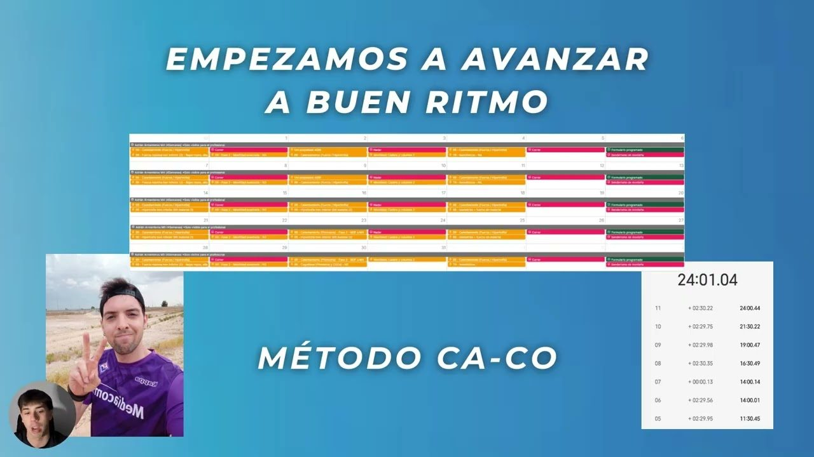
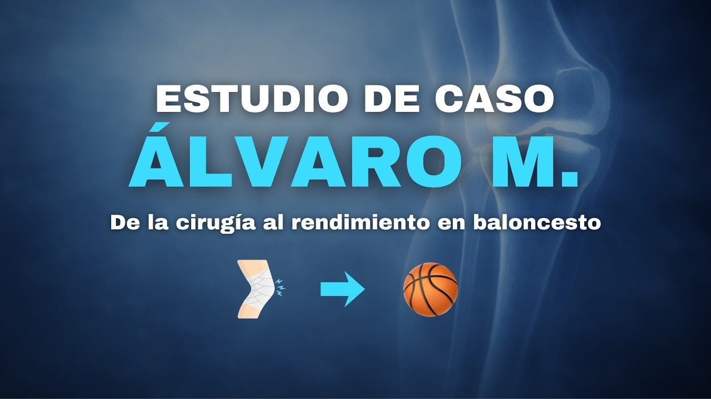

El proceso completo de deportistas que volvieron a su deporte: de dónde partían, qué hicimos y cómo terminó.

▶Estudio de casoAdri A.Método CaCo: de vuelta a correrVer el caso →
▶Estudio de casoÁlvaro M.De la cirugía al rendimiento en baloncestoVer el caso →¿Prefieres historias cortas de otros deportistas? Ver testimonios en vídeo